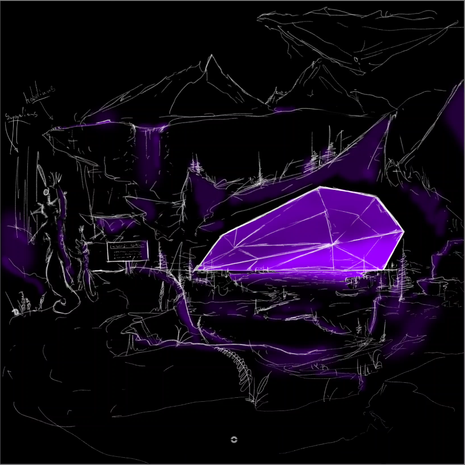
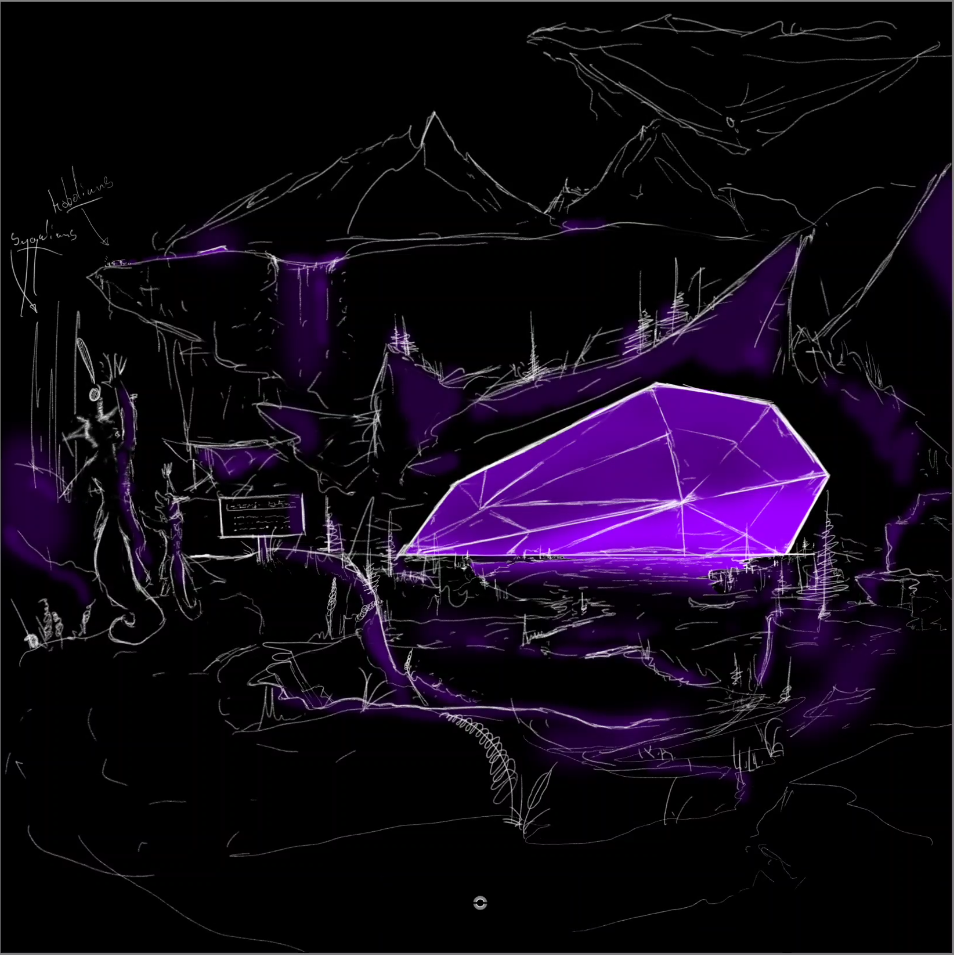

Lore
Origin (Sygelli) / Antigen lore page. This is Live and I will keep continuing to edit it as I get time!
I wrote all this at like 2 AM a long time ago and haven't edited it so... Be warned lol
Origin (Sygelli) / Antigen lore page. This is Live and I will keep continuing to edit it as I get time!
I wrote all this at like 2 AM a long time ago and haven't edited it so... Be warned lol
An autobiography of Neochroma ( A Sygal's Life)??
(pre-birth neochroma)
A collapsed supernova explodes. Not violently. Not in flames. A kinetic shift.
A controlled flamefront that gently pushes the severed masses of rock composing the giant sun into all directions such as breaking glass in outer space.
As it (physics) relates to our galaxy, the thermal mass our planet keeps is at it's core.
Inside the insulation of earths crust / mantel.
On planet Maya resides as well as the neighboring planets where our main characters reside.
The energy is stored in organic crystal structures from the "big bang" as it relates to our galaxy.
There's roughly 4 of these giant, energy dense crystal gargantuates around the planets.
They're essential for all life in this galaxy.
The creatures in this story as well as all the organic life evolved to be dependant on the radiation the giant crystals emit.
Through the evolution of flora and fauna over millions of years the organic creatures considered to be parasitic and / or passive would outlast all other forms of life.
(I know... big gap in evolution. Lots of things left unsaid).
There's two prominant species that have settled / industrialized.
Both species being the first to use the crystals energy to aid them beyond the needs of basic survival.
The sygal and kogolian races use the energy the crystals emit to establish basic technological infastructure.
The infastructure was simple at first as not much else was needed.
Life was already able to exist and evolve adequetly.
Both races found that the energy from the crystals was very effective at heating water.
Sorta like a Microwave a Microwave that doesn't cook your brain.
 

So... it turns out that warm community baths / light for the sygalic race wasn't enough to make them satisfied.
With an intelect similar to our own.
Go figure, right?
Technological advancements were made once a group of researching sygalians discovered that the energy in the crystals was indeed not limited to heat, but rather electricity.
Electricity was first known to be discovered by a group of young and bored sygalians.
The ginormous radiant crystal; life blood of their village was surrounded by shallow water.
They were taking a bath and playing on the structures they made to have fun in the water.
The younglings made rafts out of sticks, tree sap, and giant lilly pads.
They ventured out to the border of the crystal.
As their rafts gently bump into the immovable luminating crystal.
You notice your friends are giggling beside you. You give them the you better not squint and smirk and say, "what?".
They replied with, "we tripple dare you to lick it!". The sygal floating alongside the crystal replied quickly, "okay".
The others looked shocked as only there eyes were looking towards eachother for validation.
I've just touched the crystal with my bare hands.
How bad could it be?
There's "machismo" presence that's coming into play here too as he wanted to impress one of his sygalian friends he was particularly fond of.
The crystal licker noticed that his crush was intently watching!
Without hesitation he licked the crystal and noticed his tongue tingled as it came in contact with the surface of the crystal.
"eeee!" he let out a "manly" squeal as he jerked back away from the crystal.
His friends along with his crush were laughing and one of them managed to fall off the raft.
The crystal licker, embarrased splashed water at his friends regrouped and floated back to the village, bumping into eachothers rafts as they made there way home to eat their last meal of the day.
The crystal licker would tell his father and other important crystal observers about his discovery as they didn't bother to take the risk that an adventurous juvenile delinquent would.
The affectionately named crystal licker is Neo's grand father; Tenebris Objectum.
Over the years the elder crystal observers would formulate ways to capture this energy radiated by the crystal. The observers had theories of simple machines that would work using electricity. But the energy / electricity wasn't strong enough... The most important invention the sygalian race had created to this day. The foundation of all their technological advancements at the core was a capacitor! We have these in our world. In our computers, phones, everything. The sygalian race were now able to build more energy demanding tech now that they had infinate access to this power. The capacitors were large building like structures that constantly and cleanly delivered the required power to illuminate their villages at night. No more worries about predators snatching you up in the dark places you weren't able to explore in the very recent past. villages expanded further away from the crystal utilizing machines that automated a lot of building processes. The technological growth was beyond exponential however the population had time to think about basic things. Distance to travel. Distances to get food and water without aid from a device that would be dependant on the new tech. Would that justify any valid concern if the energy was endless? Is the crystals energy source enless? In our lifetime?